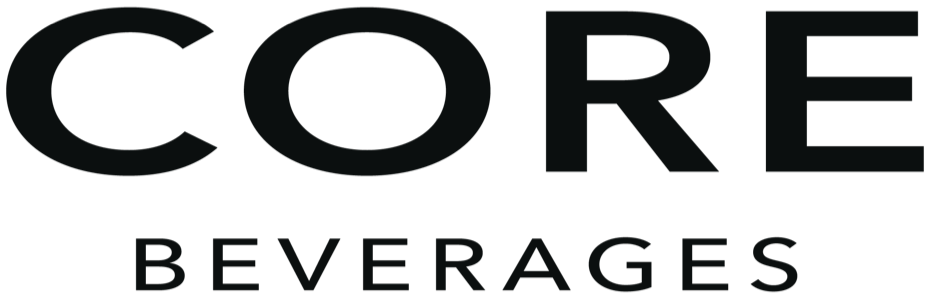
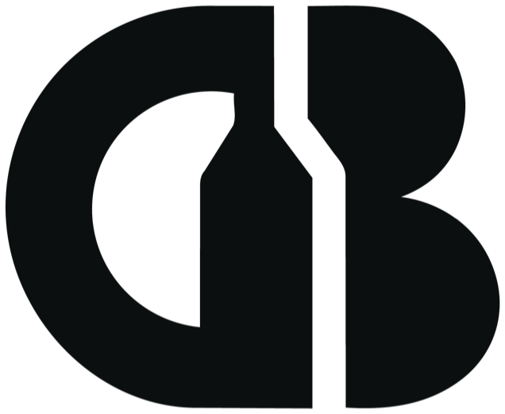

The core of a good wine list.
A proposed visual identity for the Core Beverages website, built from the CB monogram and its black and mist colourways. Like every Belmonte Beverage Group brand, it is a theme of the shared frontend: the same components, styled for Core.
Where this comes from
The only brand material supplied is the logo package: the CB monogram, whose negative space forms a bottle, above a wide CORE BEVERAGES wordmark. The files use black and a pale grey-green mist. Everything else on this page is a proposal for the client to confirm.
Logo package
Black, white and mist versions of the full logo. Ink #0B0F0F and Mist #E0E1D8 are taken from the files.
Style, not structure
Core reuses the BBG components and CMS content. Only colours, type, frames and small interaction details change.
Proposal
The accent colour, typefaces, positioning, copy, wines, producers and people are all examples to react to.
Dependable, direct, practical.
The logo is solid and geometric. The proposed positioning follows it: Core supplies the everyday core of wine lists and shelves, wines that are the same quality every vintage at a fair price. The voice is plain and useful, like a good supplier.
- Restaurants, hotels and bars looking for house wines and a core range
- Vinmonopolet category managers
- Not consumers: Norwegian law bans alcohol advertising, so the site speaks to the trade
- Lead with what the customer gets: availability, price, consistency
- Concrete numbers over adjectives
- Short sentences, no hype
Logo
Three forms of the same artwork. The full logo introduces the brand, the wordmark sits in the header and footer, and the monogram works where space is tight.

Wordmark · Ink on Mist
Monogram · Ink on ChalkClear space and size Proposal
- Mist or white artwork on Ink and dark photography
- Ink artwork on Mist, Chalk and white
- Use the monogram alone only where the brand is already named
- Fill the bottle shape between C and B
- Recolour the logo in Amber
- Separate CORE from BEVERAGES in the wordmark
Colour
Ink and Mist come from the logo files and carry the identity. Chalk and Graphite add a second light and a second dark surface, Slate is for secondary text, and Amber is a single warm accent. Amber is for fills, rules and highlights, never for text on light backgrounds.
From the logo
Proposed Proposal
Approved pairings
Contrast ratios are calculated live from the tokens. Body text needs at least 4.5:1 (WCAG AA); large headings at least 3:1.
Typography
Archivo, set semi-expanded, picks up the wide proportions of the CORE wordmark. Labels are uppercase with wide tracking, like BEVERAGES. Hanken Grotesk keeps body text and product data easy to read. Both families are on Google Fonts with Norwegian characters.
The core of a good wine list.
Æ Ø Å æ ø å · BEVERAGES · 0123456789
Dependable wines from producers who deliver the same quality, vintage after vintage.
Æ Ø Å æ ø å · Vinho Verde · 0123456789
Type scale
| Token | Sample | Desktop / mobile | Used for |
|---|---|---|---|
--core-display | Core | 76 / 40 px | Banner, producer and article titles |
--core-h1 | Our selection | 58 / 34 px | Page titles, product name |
--core-h2 | News | 40 / 26 px | Quotes, newsletter title |
--core-h3 | In stock when you need it. | 28 / 21 px | Intro lead, paragraph headings |
--core-large | Bodegas Altamira | 24 / 19 px | Producer list, characteristics |
--core-medium | Altamira Tempranillo 2023 | 19 / 17 px | Tile names, prices |
--core-body | Same quality, every vintage. | 17 px · 1.6 | Body copy (Hanken Grotesk 400) |
--core-label | About the producer | 11 px · +0.22em | Uppercase labels (Archivo 600) |
--core-caption | Red | Spain | 0,75 L | 13,5 % | 12 px | Product key info, captions |
Shape & layout
Square corners and 1 px Ink frames. Cards, counters, filters and the product section are framed boxes with internal rules, borrowing the framed style other BBG themes already use. The header is dark on every page, and Amber appears as short rules, underlines and the one call to action per page.
| Rule | Value | Note |
|---|---|---|
| Frames | 1px solid #0B0F0F | Tiles, counters, filters, product section (as pinnacle / bona-fide) |
| Hairlines | rgba(11,15,15,.18) on light, rgba(224,225,216,.22) on Ink | Paragraph rows, table rows |
| Radius | 0 | Everything square |
| Hover | Invert to Ink | Filter headings, producer rows |
Icons
Ink linework with square ends. The Core arrow is short and bold, matching the weight of the wordmark.
Photography
No photography was supplied. Proposed direction: clean, well-lit product shots on Mist, busy restaurant service and large, orderly vineyards and cellars. Cool light with warm accents. Until real images arrive, the prototype uses illustrations in the palette.
Component library
Each preview is the Core style of a component that already exists in the BBG frontend. The caption names the component in the code.
Links and labels
Product tile
Article tile and team member
Intro, quote and counter
“The house wine is the most important wine on the list.”Core Beverages
Filters and search
Type
Country
Product price and specification
About the producer band
Newsletter
Theme implementation
How the tokens map to the BBG frontend. The component-by-component list is in DESIGN.md.
| Core token | App target | Value |
|---|---|---|
--core-ink … --core-amber | :root + @theme in globals.css (bg-theme-*, text-theme-*) | 6 colours |
--core-font-display | font-core (theme font) via src/fonts/index.ts, with font-stretch: 112% | Archivo 400–700, wdth 100–125 |
--core-font-sans | Core replacement for font-global | Hanken Grotesk 400/500/600 |
--core-display … --core-medium | --font-*-clamp in [data-domain="core"] | 76 / 58 / 40 / 28 / 24 / 19 px max |
| Header colour | CMS HeaderPiece.color = Black on every page | Ink background, Mist logo |
| Logo | core-brand.tsx in brand-renderer.tsx; group logo branch in logo-renderer.tsx | Needs SVG artwork |
What we need to confirm
Brand colours
No colours were specified. Ink and Mist are taken from the logo files; Chalk, Graphite, Slate and Amber are proposals.
Typefaces
Archivo and Hanken Grotesk are proposals. Is there a licensed font for the CORE wordmark?
Positioning
Is Core the everyday core range (house wines, volume)? Does the portfolio include spirits, beer or bag-in-box?
SVG logo
Only PNG files were supplied. Vector artwork is needed for the header, footer and favicon.
Copy and photography
All text and images in the prototype are placeholders.
Content
Real producers, wines, articles and people in Crystallize, plus the publishInDomains_Core field on producers.